Year 7 Entry Assessment
- Parts A and B: choose the one option that you think is correct.
- Parts C and D: type your answers into the boxes provided.
- Read each table or diagram carefully before answering.
Vocabulary
Questions 1-5: choose the one correct option. (1 mark each)
Here is a food chain.
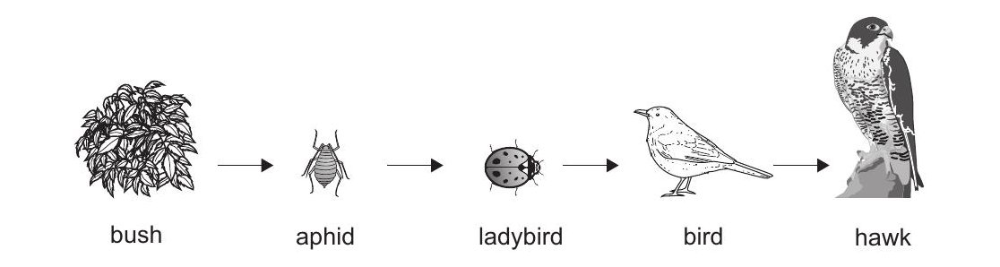
How many consumers are in this food chain?
Which of the following is a reversible change?
Which life process is food digestion a part of in animals?
Chen, Mike and Oliver write notes about the Earth and the Sun. Look at their notes. Only one is correct. Choose the name of the child who is correct.
The Sun spins on its own axis.
It takes a year to orbit the Earth.
The Earth spins on its own axis.
It takes a year to orbit the Sun.
The Earth spins on its own axis.
It takes a day to orbit the Sun.
Forces can be pushes or pulls. Here are six pictures.
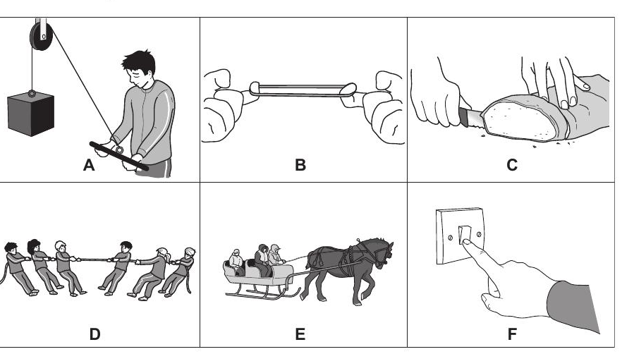
How many of the pictures show only pulling forces?
Core Concepts
Questions 6-20: choose the one correct option in each question. (1 mark each)
Humans do good things and bad things to the environment. Choose the one bad thing humans do to the environment.
Look again at the food chain shown in Q1.
Which organism in this food chain is the top predator?
Which of these statements shows a positive effect of humans on the environment?
Carlos adds salt to a beaker of water. The salt dissolves to make a solution. In this process, what is the solute?
Carlos adds sand to another beaker of water. The sand does not dissolve. Is sand soluble in water?
Each diagram below shows the arrangement of particles in a different state of matter. The diagrams are labeled A (top), B (middle) and C (bottom). Which diagram shows each state?

| A | B | C | |
|---|---|---|---|
| solid | |||
| liquid | |||
| gas |
A compass contains a magnetic material. Which of the following is a magnetic material?
The change of state when a solid turns into a liquid is called...
Which scientist first explained how gravity works?
Shadows are formed when light is...
Angelique shakes a bell to make a sound. The bell makes a sound because it...
Youssef opens a door by moving it away from himself. Which type of force does he use?
A ball has mass and weight. Choose the correct statement about the mass of the ball.
The Earth spins on its axis. How many times does the Earth spin on its axis in 24 days?
Mia is playing a guitar. The guitar string makes a sound by...
Data & Experiment
Questions 21-23: read the diagrams, tables and graphs carefully, then type your answers.
Aiko investigates how many grams of a substance dissolve in 100 cm3 of water at different temperatures.
- She measures 100 cm3 of water.
- She measures the temperature of the water.
- She keeps adding the substance until it no longer dissolves.
- She measures the mass of substance added.
Aiko then repeats the experiment but increases the temperature of the water.
Describe what happens to the particles of the substance when it dissolves in water. Use ideas about the particle model.
Write down the name of the equipment Aiko uses to accurately measure 100 cm3 of water.
Look at the thermometer reading for one of the experiments. Write down the temperature reading shown on the thermometer.
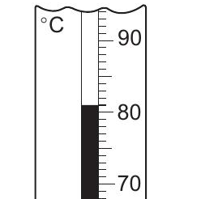
Look at a graph of Aiko's results. Describe how increasing the temperature affects the mass of substance dissolved.
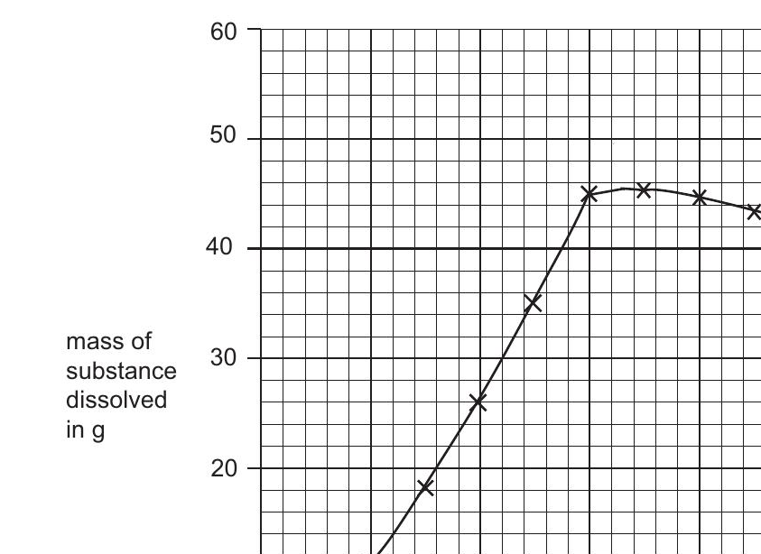
Hot water is dangerous. Suggest one thing Aiko does to stay safe in her experiment.
Copper sulfate is a blue solid that dissolves to make a blue solution. Chen has a mixture of powdered copper sulfate and sand. He adds water to this mixture and stirs for one minute. Chen then filters the mixture. This is the equipment he uses.
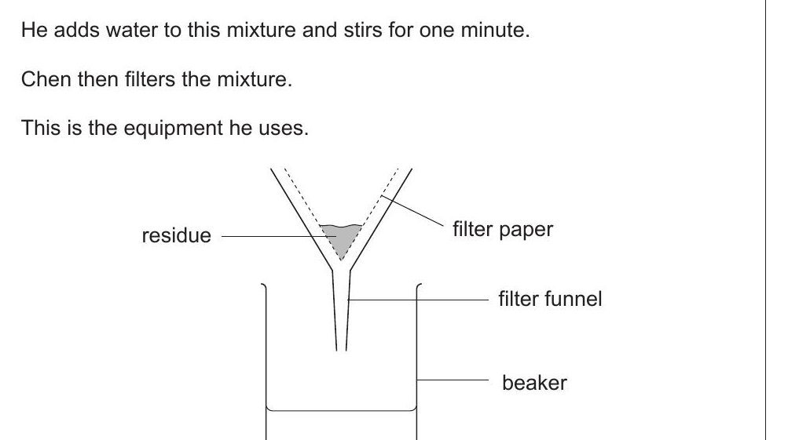
Chen cannot use a sieve to separate the mixture of sand and copper sulfate. Explain why.
What substance does the residue contain?
What is the name of the filtrate?
What colour is the filtrate?
Rajiv investigates the solubility of some substances using the internet.
He finds a line graph about the solubility of salt. Complete his conclusion. As the temperature ____, the solubility of salt ____.
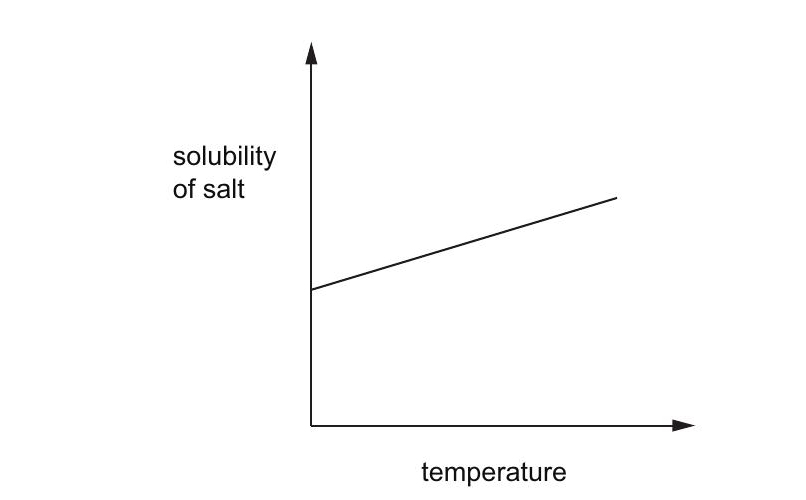
He finds a line graph about the solubility of oxygen. Complete his conclusion. As the temperature ____, the solubility of oxygen ____.
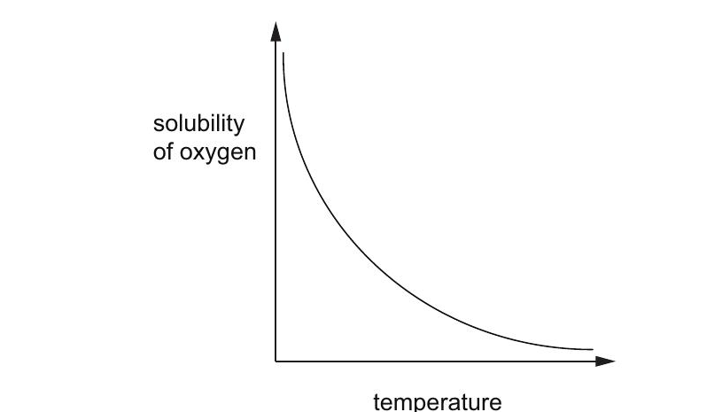
Extended Response
Questions 24-27: write fuller answers using the diagrams and tables provided.
Look at this food web for a field of grass.
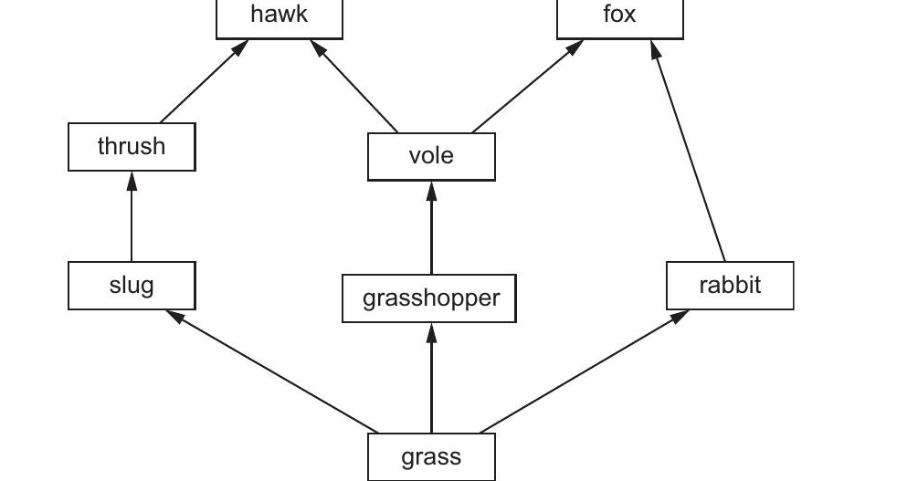
Write down the names of all the predators in this food web.
What is the energy source for this food web?
Describe how energy is transferred through this food web.
Write down one food chain from this food web that contains the fox. Use arrows ( → ) between organisms.
A farmer sprays a toxic substance on the field to kill the grasshoppers. Some of the voles in the field also die. Explain why.
In a separate experiment, Blessy adds vinegar to washing soda. A chemical reaction takes place. One way she knows a reaction is happening is because she sees a gas being made. Suggest two other observations Blessy could make that show a chemical reaction is taking place.
Blessy has two substances:
- a colourless solution called vinegar
- a white solid called washing soda.
Blessy adds vinegar to some washing soda. A chemical reaction takes place. Carbon dioxide gas and liquid water are made. A solution of sodium ethanoate is also made.
Complete the table to name the reactants and products in this chemical reaction.
| name of reactants | name of products |
|---|---|
Describe one observation Blessy makes that shows a gas is being produced.
Name the process that takes place when a liquid turns into a gas.
Name the process that takes place when a gas turns into a liquid.
Jamila has a separate mixture of three solids: copper, salt and steel.
| solid | solubility in water | is it magnetic? | is it a lump or a powder? |
|---|---|---|---|
| copper | insoluble | no | lump |
| salt | soluble | no | powder |
| steel | insoluble | yes | powder |
Describe how Jamila can separate the copper from the mixture.
Explain why this separation method works for the copper.
Youssef is using keys.
He has four pictures of different animals. Complete Youssef's key. Choose A, B, C or D for each leaf at the bottom of the key.
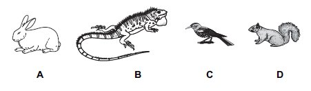
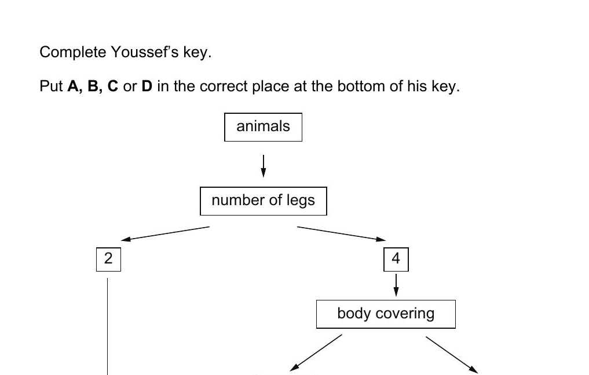
Youssef wants to make a key to identify a spider and an insect. Complete the key using number of legs and the names of the animals.
Humans have both positive and negative effects on the environment. The table shows the percentage of different types of waste produced in a city in 1970 and 2010. Describe how the percentage of each type of waste has changed from 1970 to 2010.
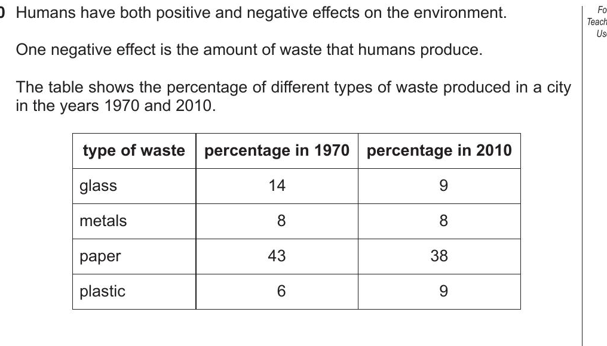
Mike uses the internet. He finds the number of Earth days in a year for different planets.
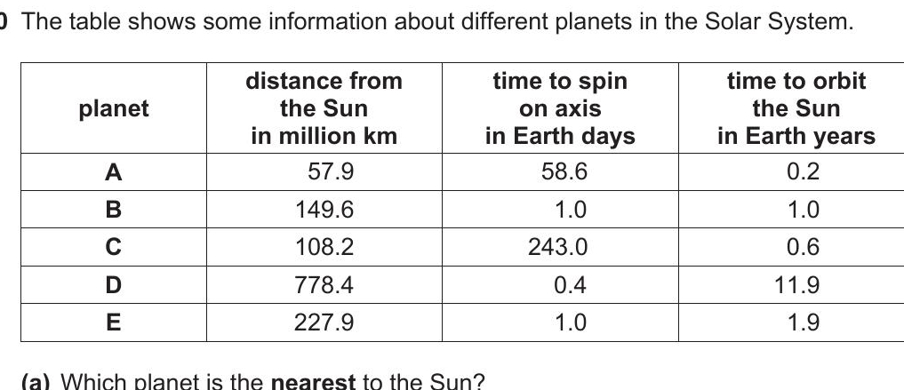
Which of these planets takes the most number of days to orbit the Sun?
How many of these planets take fewer days than the Earth to orbit the Sun?
Safia, Mia and Mike make a model of part of the solar system.
- Safia holds the hoop A.
- Mia moves the small ball B around the hoop A.
- Mike stands still in the middle holding the large ball C.
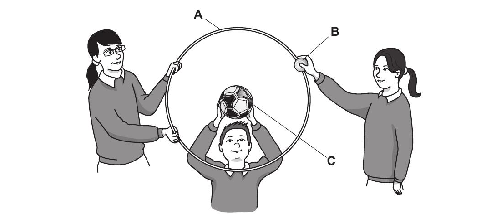
Choose from the words to label hoop A, ball B and ball C: axis · Earth · Moon · orbit · Sun.
A bird is gliding through the air. The diagram shows two forces acting on it.
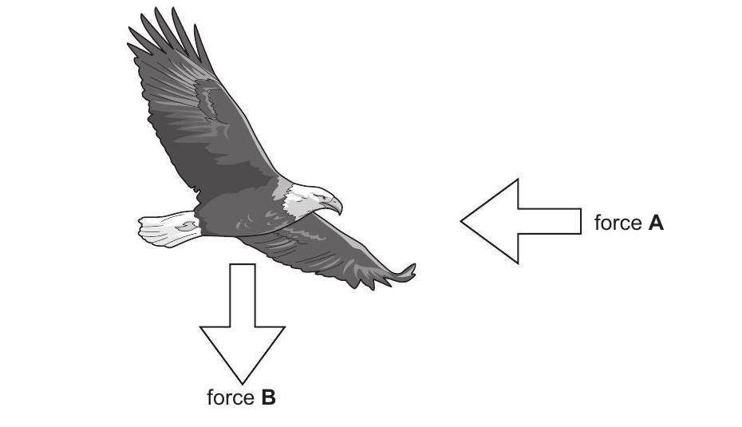
Force A is the force that slows the bird down. Write down the name of force A.
Force B pulls the bird towards the Earth. Write down the name of force B.
Force is measured in a unit. Write down the name of the unit of force.